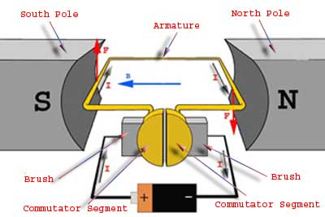
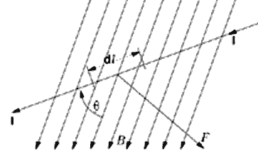
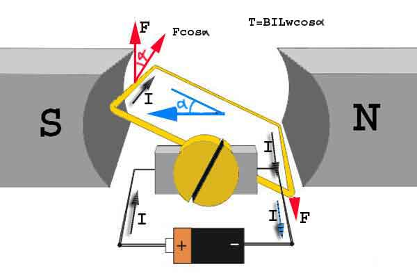
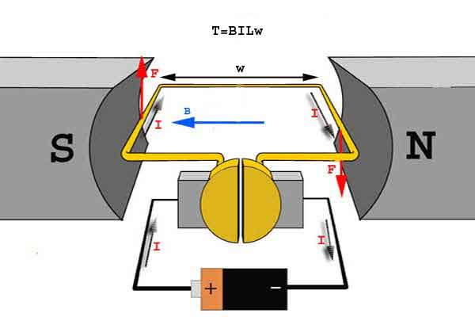
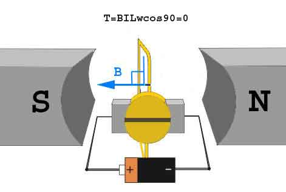

The very basic construction of a dc motor contains a electric current carrying armature which is connected to the supply end through commutator segments and brushes and placed within the north south poles of a permanent or an electro-magnet as shown in the diagram below.
Now to go into the details of the operating principle of DC motor its important that we have a clear understanding of Fleming’s left hand rule to determine the direction of force acting on the armature conductors of dc motor.

Fleming’s left hand rule says that if we extend the index finger, middle finger and thumb of our left hand in such a way that the electric current carrying conductor is placed in a magnetic field (represented by the index finger) is perpendicular to the direction of electric current (represented by the middle finger), then the conductor experiences a force in the direction (represented by the thumb) mutually perpendicular to both the direction of field and the electric current in the conductor.
For clear understanding the principle of DC motor we have to determine the magnitude of the force, by considering the diagram below.
We know that when an infinitely small charge dq is made to flow at a velocity ‘v’ under the influence of an electric field E, and a magnetic field B, then the Lorentz Force dF experienced by the charge is given by:-

For the operation of dc motor, considering E = 0
i.e. it’s the cross product of dq v and magnetic field B.
Where dL is the length of the conductor carrying charge q.
From the 1st diagram we can see that the construction of a DC motor is such that the direction of electric current through the armature conductor at all instance is perpendicular to the field. Hence the force acts on the armature conductor in the direction perpendicular to the both uniform field and electric current is constant.
So if we take the electric current in the left hand side of the armature conductor to be I, and electric current at right hand side of the armature conductor to be − I, because they are flowing in the opposite direction with respect to each other.
Then the force on the left hand side armature conductor,
Similarly force on the right hand side conductor
∴ we can see that at that position the force on either side is equal in magnitude but opposite in direction. And since the two conductors are separated by some distance w = width of the armature turn, the two opposite forces produces a rotational force or a torque that results in the rotation of the armature conductor.
Now let's examine the expression of torque when the armature turn crate an angle of α with its initial position.
The torque produced is given by,
Where α is the angle between the plane of the armature turn and the plane of reference or the initial position of the armature which is here along the direction of magnetic field.
The presence of the term cosα in the torque equation very well signifies that unlike force the torque at all position is not the same. It in fact varies with the variation of the angle α. To explain the variation of torque and the principle behind rotation of the motor let us do a step wise analysis.

Step 1:
Initially considering the armature is in its starting point or reference position where the angle α = 0.
Since α = 0, the term cos α = 1, or the maximum value, hence torque at this position is maximum given by τ = BILw. This high starting torque helps in overcoming the initial inertia of rest of the armature and sets it into rotation.

Step 2:
Once the armature is set in motion, the angle α between the actual position of the armature and its reference initial position goes on increasing in the path of its rotation until it becomes 90° from its initial position. Consequently the term cosα decreases and also the value of torque.
The torque in this case is given by τ = BILwcosα which is less than BIL w when α is greater than 0°.
Step 3:
In the path of the rotation of the armature a point is reached where the actual position of the rotor is exactly perpendicular to its initial position, i.e. α = 90°, and as a result the term cosα = 0.
The torque acting on the conductor at this position is given by,

i.e. virtually no rotating torque acts on the armature at this instance. But still the armature does not come to a standstill, this is because of the fact that the operation of dc motor has been engineered in such a way that the inertia of motion at this point is just enough to overcome this point of null torque. Once the rotor crosses over this position the angle between the actual position of the armature and the initial plane again decreases and torque starts acting on it again.
Working Principle of DC Motor
 by
by